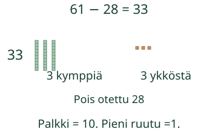
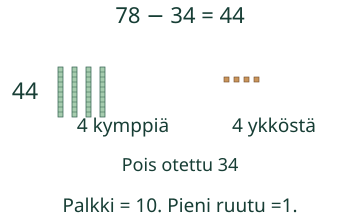

Loikalla on 61 tarraa. Hän antaa 28 pois. Laske, montako jää.
Voit vastata suoraan. Malli ja vihje ovat apua.
Miksi kymppi avataan?
Laita nappeja kymmenen ryhmiin. Pitkä palkki on 10 ykköstä. Jos irtonaisia ei riitä poisottoon, avaa yksi kymppi.
61 − 28
Yksi ykkönen ei riitä kahdeksan poisottoon. Vaihda yksi kuudesta kympistä 10 ykköseksi. 61 =50 + 11. Ota 8 ykköstä ja 2 kymppiä pois. Jää 30 + 3 =33.

Kun ykköset riittävät
78 − 34 =44. Kahdeksasta ykkösestä otetaan 4, seitsemästä kympistä 3. Kymppiä ei tarvitse avata.

Ennakoi: tarvitseeko 50 − 27:ssa avata kymppi?
Katso ajatus
Kyllä.50 on 5 kymppiä ja 0 ykköstä. Vaihda:4 kymppiä ja 10 ykköstä. Ota 2 kymppiä ja 7 ykköstä pois:23.
Vähennys kertoo myös eron
Nauhat ovat 72 cm ja 68 cm. Lyhyemmästä pidempään:68 + 2 =70, sitten vielä 2. Ero on4 cm. Voit myös laskea 72 − 68. Annetut lukemat ratkaisevat; ruudulta ei tarvitse mitata.
100 − 1 =99. Jos kaikki otetaan pois, jää 0. Nollan poisotto ei muuta määrää.
Lisätutkimus ja paperilla
Piirrä tai sido 10 napin ryhmiä. Vaihda yksi ryhmä irtonaisiksi ja takaisin. Miten tiedät, että määrä pysyy samana? Kokeile sama lasku toisella tavalla.
Opettajalle: tavoite ja rajat
Luokat 1–2, kokonaisluvut 0–100, pois otettava enintään lähtömäärä; ei negatiivisia tuloksia. Required AND: M-SUB-20 ja M-PLACE-03. M-MENTAL-01 on vahvaa tukea, ei uusi pääsyportti. Lisätehtävä pyytää saman lähtömäärän ryhmittelyä niin, että annettu kymppi/ykköspoisto on mahdollinen. Myös useamman kympin avaaminen hyväksytään, jos määrä säilyy ja molemmat poisotot mahtuvat. Mallin vaiheet eivät ole pakollinen vastausreitti. Erotehtävän cm-lukemat annetaan, näyttökuva ei ole fyysinen mitta.
Aikuinen voi lukea ohjeen. Käytä 100 nappia ja kymmenen ryhmiä. Älä vaadi esineiden nimeämistä, puhetta tai joka napin kosketusta. Peitä ratkaisu ja pyydä lapsen omaa tapaa. Harjoitusten palaute koskee vain nykyistä paikallista vastausta, ei itsenäistä, viivästettyä tai formaalia hallintaa. Ei ajanottoa, henkilöhistoriaa tai vaikuttavuusväitettä. Tarkistin hyväksyy samanarvoiset etunollat, plusmerkin ja desimaaliosan nollat; ei pyöristä. Enintään 128 merkkiä/kenttä.
Lopuksi: miten voit tarkistaa laskun 60 − 24 yhteenlaskulla?